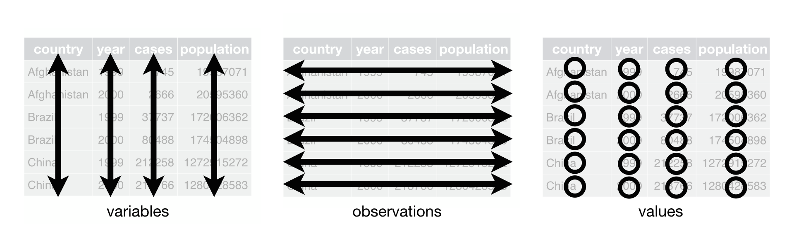
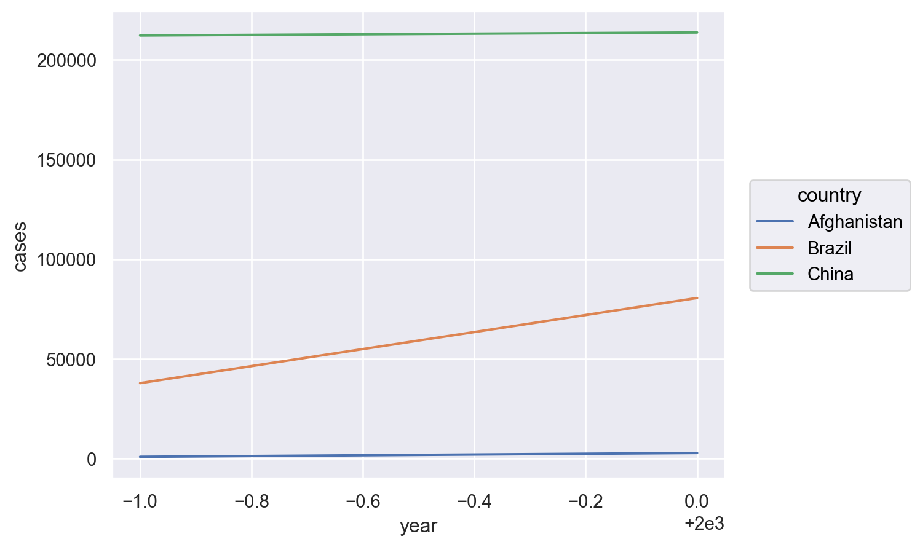
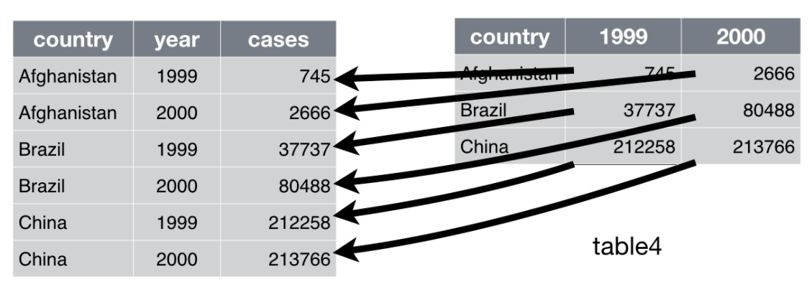
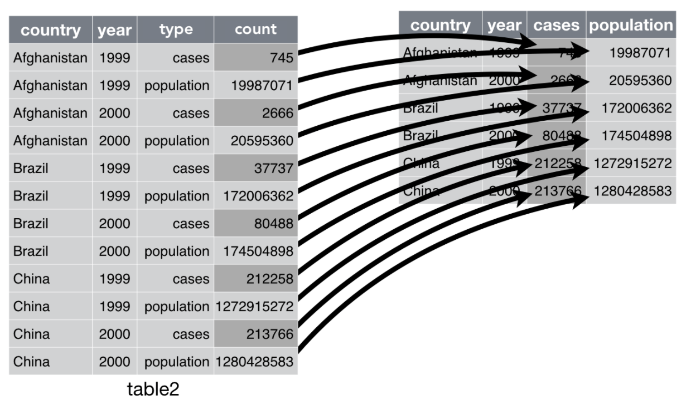

# numerical calculation & data framesimport numpy as npimport pandas as pd# visualizationimport matplotlib.pyplot as pltimport seaborn as snsimport seaborn.objects as so# statisticsimport statsmodels.api as sm# pandas optionspd.set_option('mode.copy_on_write', True) # pandas 2.0pd.options.display.float_format ='{:.2f}'.format# pd.reset_option('display.float_format')pd.options.display.max_rows =7# max number of rows to display# NumPy optionsnp.set_printoptions(precision =2, suppress=True) # suppress scientific notation# For high resolution displayimport matplotlib_inlinematplotlib_inline.backend_inline.set_matplotlib_formats("retina")
Tidy data의 요건
Each variable must have its own column.
Each observation must have its own row.
Each value must have its own cell.

아래의 데이터는 모두 같은 4가지 정보, country, year, cases, population을 담고 있으나 table1만 tidy
country year cases population
0 Afghanistan 1999 745 19987071
1 Afghanistan 2000 2666 20595360
2 Brazil 1999 37737 172006362
3 Brazil 2000 80488 174504898
4 China 1999 212258 1272915272
5 China 2000 213766 1280428583
country year type count
0 Afghanistan 1999 cases 745
1 Afghanistan 1999 population 19987071
2 Afghanistan 2000 cases 2666
.. ... ... ... ...
9 China 1999 population 1272915272
10 China 2000 cases 213766
11 China 2000 population 1280428583
[12 rows x 4 columns]
country year rate
0 Afghanistan 1999 745/19987071
1 Afghanistan 2000 2666/20595360
2 Brazil 1999 37737/172006362
3 Brazil 2000 80488/174504898
4 China 1999 212258/1272915272
5 China 2000 213766/1280428583
country year cases population rate
0 Afghanistan 1999 745 19987071 0.37
1 Afghanistan 2000 2666 20595360 1.29
2 Brazil 1999 37737 172006362 2.19
3 Brazil 2000 80488 174504898 4.61
4 China 1999 212258 1272915272 1.67
5 China 2000 213766 1280428583 1.67
# Compute cases per yeartable1.groupby("year")["cases"].sum()
year
1999 250740
2000 296920
Name: cases, dtype: int64
# Visualise changes over time( so.Plot(table1, x="year", y="cases") .add(so.Line(), color="country"))

Long Form
melt() stack(): index에 적용
table4a
country 1999 2000
0 Afghanistan 745 2666
1 Brazil 37737 80488
2 China 212258 213766

table4a_long = table4a.melt( id_vars="country", # 고정할 컬럼 value_vars=["1999", "2000"], # value로 사용할 컬럼 var_name="year", # 컬럼에 있는 정보에 대한 변수명 value_name="cases"# value에 있는 정보에 대한 변수명)table4a_long
country year cases
0 Afghanistan 1999 745
1 Brazil 1999 37737
2 China 1999 212258
3 Afghanistan 2000 2666
4 Brazil 2000 80488
5 China 2000 213766
Note
생략시 모든 컬럼을 value_vars로 사용.
컬럼 이름은 각각 variable, value로 나타남.
table4a_long = table4a.melt(id_vars="country") # 또는 pd.melt() 이용# country variable value# 0 Afghanistan 1999 745# 1 Brazil 1999 37737# 2 China 1999 212258# 3 Afghanistan 2000 2666# 4 Brazil 2000 80488# 5 China 2000 213766
Note
stack()은 index를 이용해 long form으로 변환시켜 줌. (컬럼 전체가 stack됨)
table4a.set_index("country").stack() # Series# country # Afghanistan 1999 745# 2000 2666# Brazil 1999 37737# 2000 80488# China 1999 212258# 2000 213766# dtype: int64
unstack()은 반대
table4a.set_index("country").stack().unstack(level=0)# country Afghanistan Brazil China# 1999 745 37737 212258# 2000 2666 80488 213766
# 마찬가지로 table4b도 long format으로 변환: population의 정보table4b
country 1999 2000
0 Afghanistan 19987071 20595360
1 Brazil 172006362 174504898
2 China 1272915272 1280428583
table4b_long = table4b.melt( id_vars="country", # 고정할 컬럼 value_vars=["1999", "2000"] # value로 사용할 컬럼 var_name="year", # 컬럼에 있는 정보에 대한 변수명 value_name="population", # value에 있는 정보에 대한 변수명) table4b_long
country year population
0 Afghanistan 1999 19987071
1 Brazil 1999 172006362
2 China 1999 1272915272
3 Afghanistan 2000 20595360
4 Brazil 2000 174504898
5 China 2000 1280428583
country year cases population
0 Afghanistan 1999 745 19987071
1 Brazil 1999 37737 172006362
2 China 1999 212258 1272915272
3 Afghanistan 2000 2666 20595360
4 Brazil 2000 80488 174504898
5 China 2000 213766 1280428583
Wide Format
pivot() unstack(): index에 적용
table2
country year type count
0 Afghanistan 1999 cases 745
1 Afghanistan 1999 population 19987071
2 Afghanistan 2000 cases 2666
.. ... ... ... ...
9 China 1999 population 1272915272
10 China 2000 cases 213766
11 China 2000 population 1280428583
[12 rows x 4 columns]

table2.pivot( index=["country", "year"], # index로 고정할 컬럼 columns="type", # 컬럼 이름으로 들어갈 컬럼 values="count"# 값로 들어갈 컬럼)
type cases population
country year
Afghanistan 1999 745 19987071
2000 2666 20595360
Brazil 1999 37737 172006362
2000 80488 174504898
China 1999 212258 1272915272
2000 213766 1280428583
Note
unstack()은 index를 이용해 wide form으로 변환시켜 줌
맨 안쪽 index level (level=2)에 default로 적용
table2.set_index(["country", "year", "type"]).unstack() # count # type cases population# country year # Afghanistan 1999 745 19987071# 2000 2666 20595360# Brazil 1999 37737 172006362# 2000 80488 174504898# China 1999 212258 1272915272# 2000 213766 1280428583
# Use .pivot()table1.pivot(index="country", columns="year", values=["cases", "population"]) # values: list로 입력
cases population
year 1999 2000 1999 2000
country
Afghanistan 745 2666 19987071 20595360
Brazil 37737 80488 172006362 174504898
China 212258 213766 1272915272 1280428583
# Use .unstack() to pivot a level of the index labelstable1.set_index(["country", "year"]).unstack("year")# table1.set_index(["country", "year"])# cases population# country year # Afghanistan 1999 745 19987071# 2000 2666 20595360# Brazil 1999 37737 172006362# 2000 80488 174504898# ...
cases population
year 1999 2000 1999 2000
country
Afghanistan 745 2666 19987071 20595360
Brazil 37737 80488 172006362 174504898
China 212258 213766 1272915272 1280428583
Separating and uniting
table3
country year rate
0 Afghanistan 1999 745/19987071
1 Afghanistan 2000 2666/20595360
2 Brazil 1999 37737/172006362
3 Brazil 2000 80488/174504898
4 China 1999 212258/1272915272
5 China 2000 213766/1280428583
rate에 있는 case와 population 정보를 분리
table3["rate"].str.split("/", expand=True) # expand: list의 성분을 분리하여 컬럼으로 만듦
table3[["cases", "population"]] =\ table3.pop("rate").str.split("/", expand=True) # pop: 제거와 선택 동시table3
country year cases population
0 Afghanistan 1999 745 19987071
1 Afghanistan 2000 2666 20595360
2 Brazil 1999 37737 172006362
3 Brazil 2000 80488 174504898
4 China 1999 212258 1272915272
5 China 2000 213766 1280428583